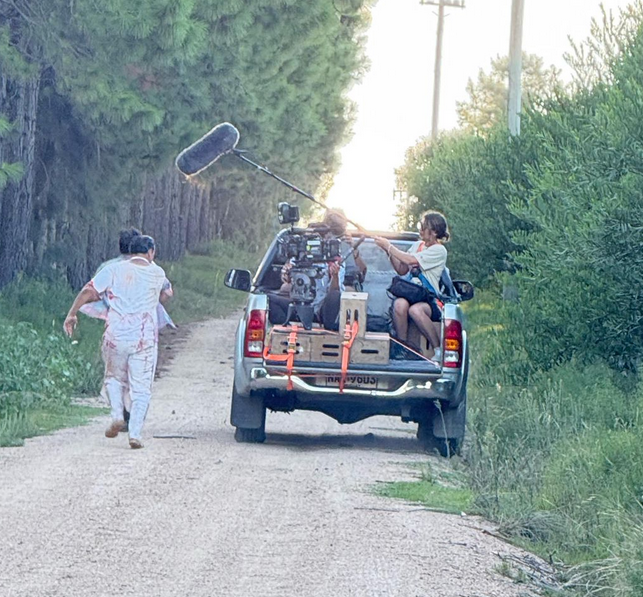
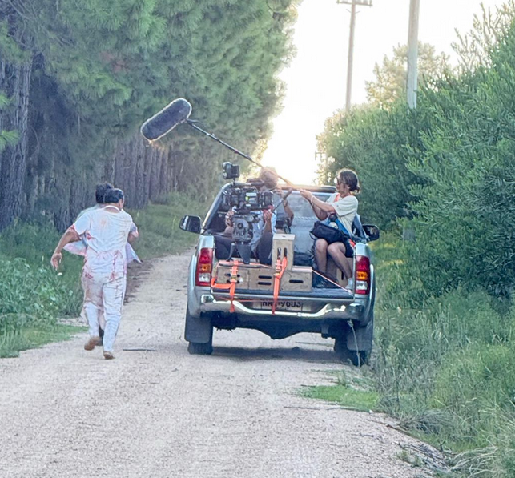

CAROLINA ROMERO
Sound Designer / Producción Audiovisual & Musical
 

Portfolio
Sonido directo durante todo el proyecto
Captura de audio durante la filmación
Dirección de sonido y captura, post producción
Restauracion de audio y post producción
Dirección de sonido y captura, post producción
Composición musical, diseño de sonido
Sobre mí
Soy Carolina Romero, productora musical y diseñadora de sonido para audiovisual y videojuegos. Me encanta el sonido.
Me interesa especialmente el vínculo entre imagen y sonido, y cómo se puede transformar una narrativa usándolos en conjunto.
Mi trabajo combina sensibilidad artística con precisión técnica.
Además de mi formación en sonido (ORT Comunicación), tengo formación complementaria en ingeniería eléctrica y en música. Soy violinista de formación clásica, con experiencia en composición musical y arreglos